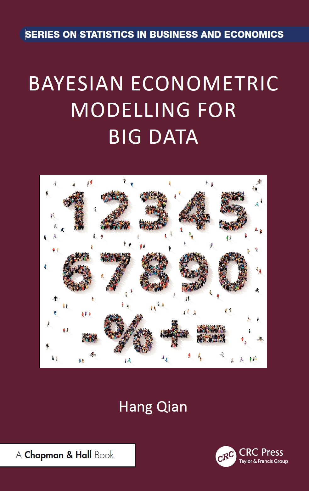
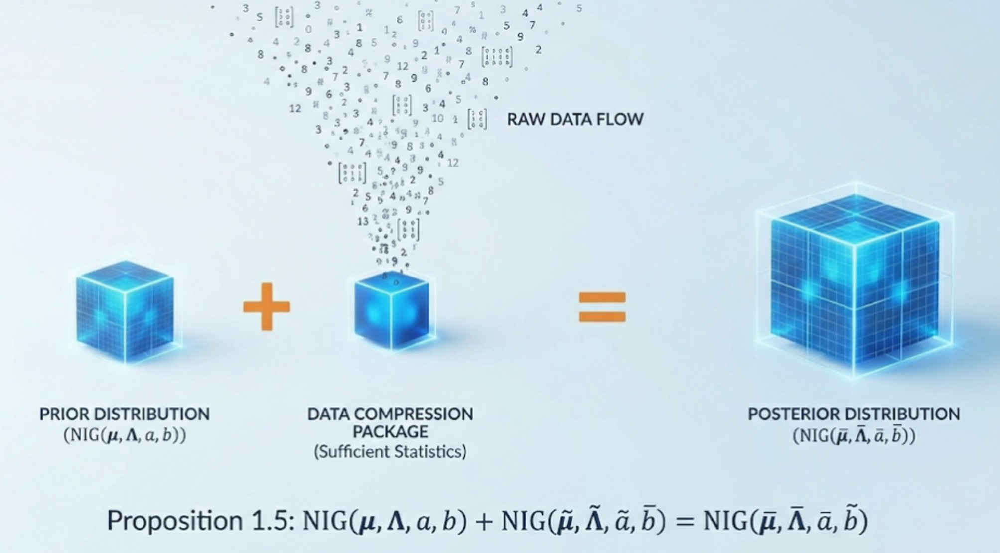
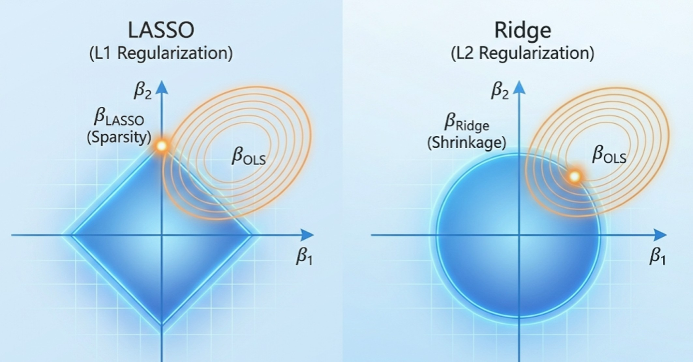
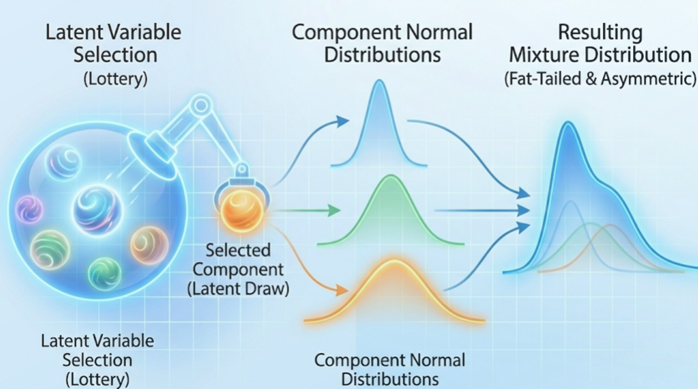
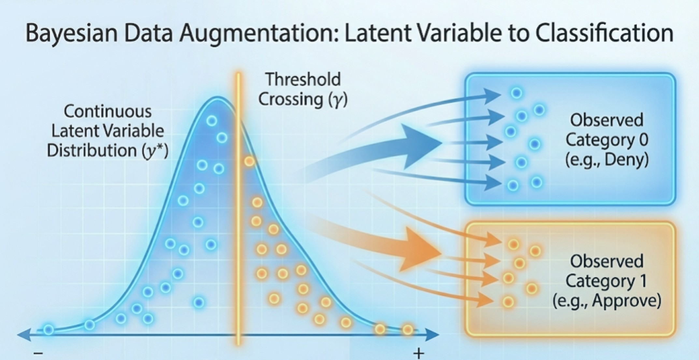
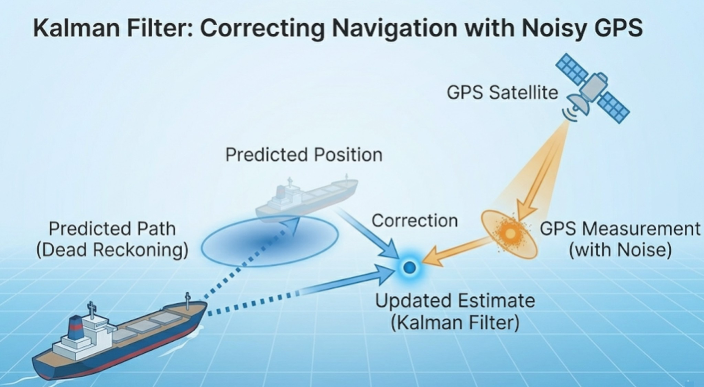
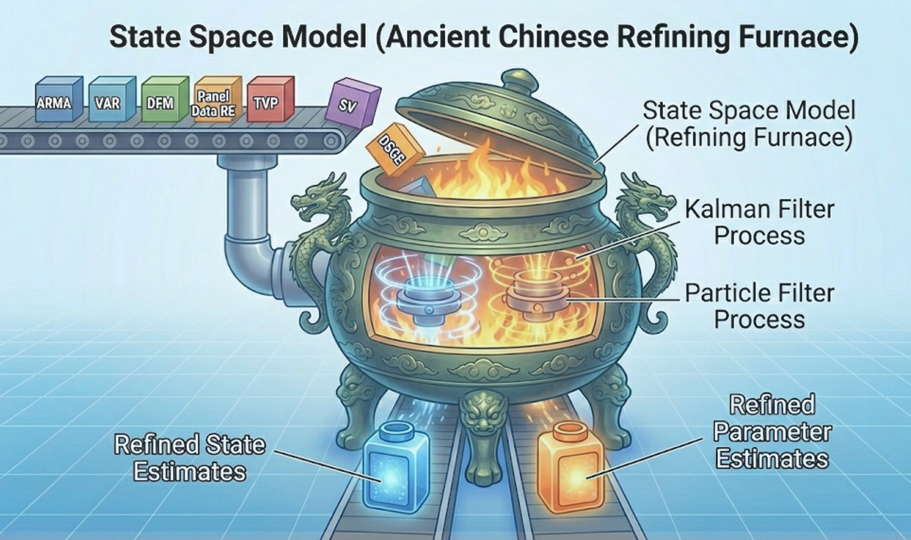

Image'">
Bayesian Econometric Modelling for Big Data
Author: Hang Qian
Publisher: Chapman and Hall/CRC
Series: Series on Statistics in Business and Economics
Published: June 19, 2025 | Pages: 486
ISBN: 9781032915258 | DOI: 10.1201/9781003564027
Table of Contents & Chapter Summaries
Chapter 1: Linear Regressions
Abstract: This chapter focuses on Gaussian linear regressions, serving as the foundational building block for Bayesian econometrics. It introduces Bayesian analysis from a novel perspective, emphasizing the arithmetic operations of summation, subtraction, and multiplication applied to conjugate distributions. Utilizing these arithmetic operators conceptualizes pseudo data, simplifies exact Bayesian inference for massive datasets, and adds an intriguing dimension to exploring traditional econometric models. Furthermore, the chapter covers crucial concepts such as marginal likelihood for model comparison, posterior predictive assessment, and exponential family distributions, equipping readers with scalable tools for big data applications like mortgage shopping and rolling-window regressions.

- 1.1 Conjugate Distributions
- 1.2 NIG Summation
- 1.3 NIG Subtraction
- 1.4 NIG Scalar Multiplication
- 1.5 Marginal Likelihood
- 1.6 Prediction
- 1.7 Posterior Predictive Assessment
- 1.8 Multivariate Extension
- 1.9 Extension to Exponential Family
- 1.10 Software and Computational Considerations
- 1.11 An Application on Mortgage Shopping
- 1.12 An Application on Large Bayesian Vector Autoregression
- 1.13 An Application on Rolling-window Regressions
Chapter 2: Markov Chain Monte Carlo Methods
Abstract: This chapter provides a comprehensive overview of Markov Chain Monte Carlo (MCMC) methods, which have become the cornerstone of modern Bayesian computation. Unified by the powerful and adaptable Metropolis-Hastings (MH) sampling technique, the text covers foundational algorithms including the Gibbs sampler, slice sampling, and Hamiltonian Monte Carlo. The pseudo-marginal MH sampler makes Bayesian inference feasible for a large collection of statistical models that are difficult to estimate by classical methods. Exact approximation by an unbiased estimator facilitates parameter estimation when the likelihood function is intractable. Recognizing the computational bottlenecks of evaluating target densities in massive datasets, the latter half of the chapter adapts these traditional methods to address big data challenges. Advanced scalable techniques, such as divide-and-conquer strategies and various subsampling methods (e.g., delayed acceptance, firefly Monte Carlo, and stochastic gradient Langevin dynamics), are thoroughly explored alongside practical software implementation considerations.
- 2.1 Discrete-state MH Sampler
- 2.2 MH Sampler in the General Form
- 2.3 Gibbs Sampler
- 2.4 Hamiltonian Monte Carlo
- 2.5 Multiple-try MH Sampler
- 2.6 Trans-dimensional MCMC Methods
- 2.7 Pseudo-marginal MH Sampler
- 2.8 Big Data MCMC: Divide and Conquer
- 2.9 Big Data MCMC: Subsampling
- 2.10 Software and Computational Considerations
- 2.11 An Application on Fertility Choice
Chapter 3: Shrinkage and Variable Selection
Abstract: This chapter highlights the critical importance of incorporating prior information when data alone are insufficient for precise parameter estimation, particularly in the presence of multicollinearity or high-dimensional predictors. It explores various regularization and variable selection methods—including Ridge, Lasso, and Stochastic Search Variable Selection (SSVS)—which penalize excessively large coefficients. These techniques effectively reduce estimation variance, mitigate the risks of overfitting, and significantly improve model interpretability by isolating the most impactful variables. Furthermore, the chapter demonstrates how the normal-inverse-gamma (NIG) summation operator facilitates these shrinkage methods in big data contexts, allowing for efficient MCMC simulations without the need to repeatedly scan the entire dataset.

- 3.1 Multicollinearity
- 3.2 Ridge Regression
- 3.3 Lasso Regression
- 3.4 Stochastic Search Variable Selection
- 3.5 MCMC Model Composition
- 3.6 Software and Computational Considerations
- 3.7 An Application on Highest Paying Jobs
Chapter 4: Correlation, Heteroscedasticity and Non-Gaussian Regressions
Abstract: While standard linear regressions often assume independent and identically distributed Gaussian errors for mathematical convenience, real-world data frequently violate these assumptions. This chapter addresses flexible econometric specifications designed to accommodate empirical anomalies such as correlation, heteroscedasticity, skewness, and excess kurtosis (fat tails). By moving beyond the diagonal covariance matrix, it explores stochastic volatility, scale mixtures, and finite mixture distributions, as well as Bayesian nonparametric approaches like Dirichlet Process Mixture Models (DPMM) and quantile regressions. Although these advanced non-Gaussian models typically lack closed-form posteriors, the chapter demonstrates how conditionally conjugate structures can be skillfully exploited to design highly efficient MCMC samplers.

- 4.1 General Error Covariance Matrix
- 4.2 Stochastic Volatility
- 4.3 Fat Tail and Scale Mixture Distribution
- 4.4 Asymmetry and Skewness
- 4.5 Finite Mixture Distribution
- 4.6 Dirichlet Process Mixture Models
- 4.7 Quantile Regression
- 4.8 Model Assessment and Comparison
- 4.9 Software and Computational Considerations
- 4.10 An Application of Ridesharing Effect by Non-Gaussian Regressions
Chapter 5: Limited Dependent Variable Models
Abstract: Standard linear regression assumes that the dependent variable is continuous and spans the entire real number line, but many economic datasets are inherently constrained. This chapter systematically addresses models for limited dependent variables, offering tailored Bayesian solutions for a variety of data types. It covers binary and multinomial outcomes using Probit and Logistic regressions, handles bounded data through truncated, censored, and Tobit models, and corrects for non-random missing data via sample selection models (incidental truncation). Additionally, it provides specialized frameworks for count data (Poisson regression), duration data (survival analysis), and proportional data (Beta regression), utilizing Metropolis-Hastings and gradient-based numerical optimization for posterior estimation.

- 5.1 Probit Model
- 5.2 Logistic Regression
- 5.3 Truncation, Censoring and Tobit Model
- 5.4 Incidental Truncation and Sample Selection
- 5.5 Count Data and Poisson Regression
- 5.6 Duration Data and Survival Analysis
- 5.7 Beta Regression
- 5.8 Software and Computational Considerations
- 5.9 An Application of Loan Actions and Mortgage Rates
Chapter 6: Linear State Space Models
Abstract: This chapter introduces linear state space models, a remarkably versatile framework that bridges control system engineering and time series econometrics. Unlike traditional models that solely describe observed data, the state space approach explicitly incorporates latent variables—such as unobserved components, missing data, or time-varying parameters—into a dynamic system. A deep dive is provided into the Kalman filter, a sequential online learning algorithm that recursively updates the posterior state distribution with each new observation. Beyond forward filtering, the chapter covers backward smoothing to refine past estimates. It also unifies state estimation with parameter estimation through likelihood-based inference and Bayesian MCMC simulation, alongside practical strategies for exact initialization and numerical stability.

- 6.1 Model Specification
- 6.2 Kalman Filter
- 6.3 More on Kalman Filter
- 6.4 Kalman Smoother and Simulation Smoothing
- 6.5 Parameter Estimation
- 6.6 Initialization of State Space Models
- 6.7 Software and Computational Considerations
- 6.8 An Application on Exchange Rates
Chapter 7: Nonlinear State Space Models
Abstract: When dealing with nonlinear and non-Gaussian state space models, the analytical tractability of the standard Kalman filter is compromised. This chapter explores a spectrum of advanced methodologies designed to approximate filtering and smoothing distributions under varying degrees of nonlinearity. It begins with specialized non-Gaussian models using data augmentation, before detailing the Extended and Unscented Kalman filters for continuous approximations, and Hidden Markov Models for discrete states. The core focus then shifts to the Particle Filter (Sequential Monte Carlo), providing an in-depth treatment of importance sampling, resampling, and Rao-Blackwellization. The chapter also covers a variety of particle smoothing methods that utilize the entire dataset to approximate the posterior distributions of states. Parameters in nonlinear state space models can be estimated either offline or online. The pseudo-marginal and particle marginal methods combine SMC and MCMC in a principled manner. The correlated pseudo-marginal method significantly enhances the numerical stability of the sampler. Additionally, SMC-Square provides sequential parameter learning methods that update parameters as new data become available.

- 7.1 Special Non-Gaussian State Space Models
- 7.2 Extended Kalman Filter
- 7.3 Unscented Kalman Filter
- 7.4 Hidden Markov Model
- 7.5 Particle Filter
- 7.6 Particle Smoothing
- 7.7 Parameter Estimation
- 7.8 Parameter Learning
- 7.9 Software and Computational Considerations
- 7.10 An Application on Inequality Constrained Time-varying-parameter Regression
Chapter 8: Applications of State Space Models
Abstract: As the most extensive chapter of the book, this section demonstrates the remarkable unifying power of the state space framework by applying it to a wide array of prominent econometric models. By casting these diverse methodologies into state space representations, the chapter offers unique insights and scalable estimation techniques for both univariate and multivariate time series. Key models explored in depth include:
- ARMA & Unobserved Components: Decomposing time series into local level, trend, seasonality, and cycles.
- Vector Autoregressions (VAR): Formulating large Bayesian VARs for macroeconomic forecasting and impulse response analysis.
- Dynamic Factor Models (DFM): Extracting latent factors in data-rich environments for nowcasting and yield curve predictions.
- Time-Varying-Parameter (TVP) Regressions: Capturing parameter instability and structural breaks over decades of data.
- Panel Data Analysis: Seamlessly managing missing data and unifying random/fixed effects within a dynamic framework.
- Stochastic Volatility (SV): Extending GARCH models to capture volatility clustering in financial markets via nonlinear state variables.
- Dynamic Stochastic General Equilibrium (DSGE): Solving and estimating both linear and nonlinear structural macroeconomic models based on microeconomic foundations.

- 8.1 ARMA Models
- 8.2 Unobserved Component Models
- 8.3 Vector Autoregressions
- 8.4 Dynamic Factor Models
- 8.5 Time-varying-parameter Regressions
- 8.6 Panel Data Analysis
- 8.7 From GARCH to Stochastic Volatility
- 8.8 Linear DSGE Models
- 8.9 Nonlinear DSGE Models
- 8.10 Software and Computational Considerations
- 8.11 Applications